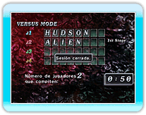
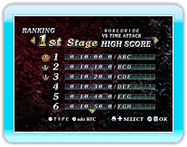

13 |
VERSUS MODE |
 |
|
En este modo, puedes enfrentarte a jugadores que estén lejos a través de la Conexión Wi-Fi de
Nintendo. Simplemente seleccionado este modo te conectarás automáticamente a la Conexión Wi-Fi de Nintendo.
● WORLD WIDE ● REGIONAL
● FRIEND
Una vez hayas seleccionado el tipo de grupo con el que quieres jugar, abrirás la
sesión para los participantes. Si nadie se une a la sesión, se cancelará la partida y serás desconectado. Mientras esperas a que se unan otros jugadores, puedes volver el Modo Seleccionar pulsando Una vez haya suficientes
jugadores, los jugadores decidirán la fase (la mayoría gana).
* Si la votación acaba en empate, la regla para la sesión se * No puedes seleccionar las fases de los jefes.
Una vez se hayan decidido
la fase, comenzará la partida. Cuando un jugador haya terminado la partida, se puede ver la clasificación actual.
Este modo es en Contrarreloj. Juega hasta que uno de los jugadores llegue a la cantidad de puntos
especificada (10 mil.)
La Pantalla de Resultados contiene una lista con tus 30 mejores puntuaciones.
Si consigues tu mejor puntuación compitiendo contra otro jugador a través de la CWF de Nintendo, puedes registrarla en la Clasificación de la Conexión Wi-Fi de Nintendo. Cuando tu resultado esté registrado, podrás ver tu posición además de la de los otros 30 jugadores que tengan una posición cercana a la tuya. |
 |
 |
 |